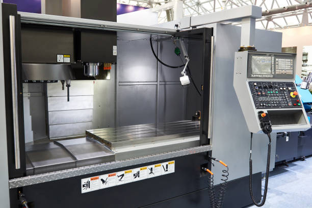
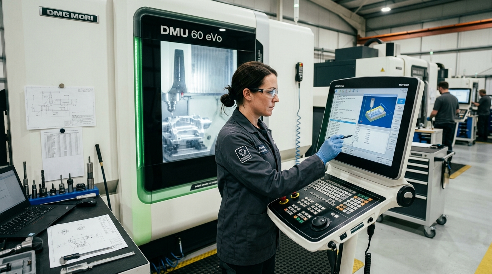

Comprehensive CNC machining.
Unified on one platform.
From one-off rapid prototypes to high-volume recurring production programs, explore our full suite of 5-axis milling, live-tooling turning, surface finishing, and quality metrology services.
5-Axis Simultaneous & Vertical CNC Milling.
Engineered for complex prismatic and organic geometries, thin-walled aerospace housings, and high-precision fluid manifolds with tolerances down to ±0.005 mm.
High-Velocity Multi-Axis Capabilities
Utilizing high-torque 15,000 to 24,000 RPM spindles with dynamic adaptive clearing. Our 5-axis simultaneous machining centers allow complex angles and undercuts to be machined in a single setup ("Done-in-One"), eliminating fixturing errors and significantly boosting cycle repeatability.

3-Axis vs 5-Axis Simultaneous Milling Comparison
| Feature / Parameter | 3-Axis CNC Milling | 5-Axis Simultaneous CNC Milling |
|---|---|---|
| Geometric Versatility | Prismatic parts, flat plates, face milling, top-down cavities | Compound angles, organic aerospace surfaces, impellers, undercuts |
| Setup Operations | Requires 2 to 5 manual repositioning setups | Single setup ("Done-in-One" continuous multi-angle machining) |
| Tool Rigidity & Vibration | Requires longer tool stick-outs for deep features | Short, rigid cutters tilted along tool vectors for minimal chatter |
| Standard Tolerance | ±0.010 mm (±0.0004 in) | ±0.005 mm (±0.0002 in) |
| Typical Applications | Mounting plates, brackets, simple enclosures, sensor lids | Turbine blisks, surgical implants, 5-axis robotics housings |
Live-Tooling CNC Turning & Swiss Machining.
Multi-spindle live tooling turning engineered for shafts, precision bushings, hydraulic pistons, and concentric rotational components with sub-micron runout.

Dual Spindle Turn-Mill Machining
Our Mazak and Doosan turning centers feature sub-spindles and Y-axis driven tooling, allowing cross-drilling, keyway milling, axial tapping, and back-machining to occur seamlessly without transferring parts between separate machines.
Fast-Turn Prototyping & Engineering Validation.
Bridge the gap between digital CAD design and functional physical testing. We validate geometry, optimize tooling paths, and deliver prototype parts in as fast as 24 hours.
Design for Manufacturability (DFM)
Before any spindle turns, our senior manufacturing engineers perform comprehensive DFM analysis on your STEP, IGES, or SolidWorks files to detect deep internal radii, thin wall deflection, and tool clearance limitations, helping eliminate costly design revisions.

Custom Machining Solutions.
Specialized manufacturing solutions configured for challenging geometries, high-mix batch schedules, and demanding environmental conditions.
High-Mix Low-Volume Production
Agile production lines optimized for contract programs requiring 10 to 5,000 components with dedicated tooling storage and zero setup lag.
Exotic & Refractory Alloys
Decades of master machining experience cutting titanium (Ti-6Al-4V), Inconel 718/625, Hastelloy, Monel, Kovar, and medical-grade PEEK.
Tight-Tolerance Micro-Machining
Sub-millimeter micro-milling and micro-turning with cutters down to 0.2 mm diameter for precision optics, nozzles, and sensor housings.